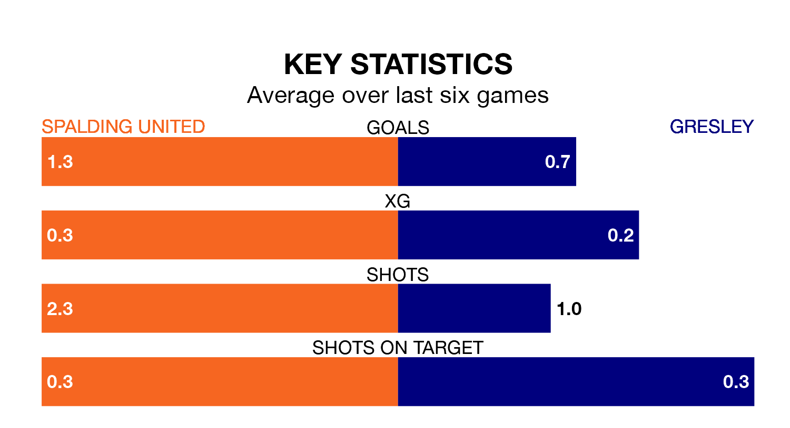

Mid-season relegation candidates Gresley face a challenge away against high-flying Spalding United at Sir Halley Stewart Field on Saturday.
Gresley are 18th in the Northern Premier League Division One – Midlands table, and have picked up four wins and six draws in their 26 games to date.
Spalding, meanwhile, are top of the standings with 55 points, having won 17 and drawn four of their first 25 matches.
With 52 goals in 25 games so far this season, Spalding are the league's third-highest scorers with 2.1 goals per game. And they are conceding fewer than average, letting in 25 goals at a rate of 1.0 per game.
Gresley, meanwhile, are below average scorers, with 1.0 goal per game, compared to a league average of 1.5. They have conceded 2.6 goals per game.
United are in fantastic form in Northern Premier League Division One Midlands, with five wins and one loss from their last six games.
With a win and five losses over that period, the visitors' form is much worse – they have taken three points from 18, compared to the home side's 15.
In the last three years, Spalding and Gresley have played each other on three occasions. Spalding won two of them and they drew once.
Their last meeting was on October 17, when they played out a 2-2 draw.
Spalding's last match was on January 27, a 2-1 win against Corby Town.
Gresley lost 4-0 against Harborough Town last time out, also on January 27.
Updated: 15:45 (UTC), 02/02/24